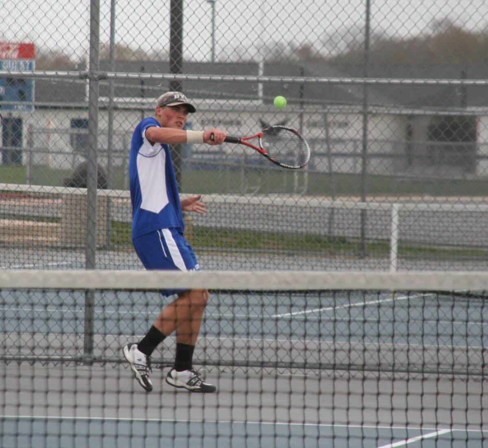
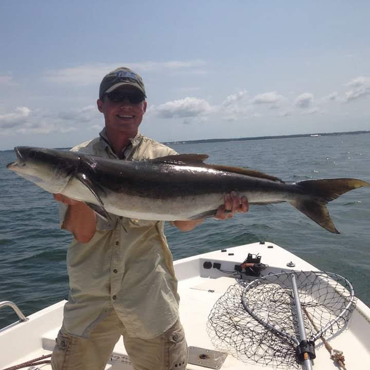
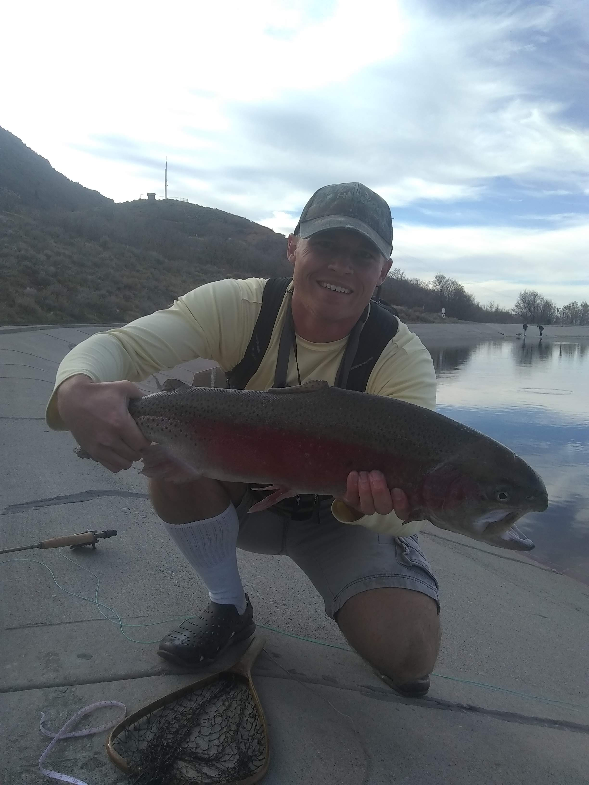

Resume
- Edudcation
- Brigham Young Universty 2014-2022
- Degree in Business Managment
- Emphasis in business to business sales
- Experience
- Mountaire Farms Sales Intern | May 2021-Aug 2021
- Compared Mountaire’s labeling and packaging strategy to competitors’ strategies for retail and wholesale
- After presenting to the Company president and senior management, Mountaire implemented the majority of my recommendations
- Updated sales inventory system for over 400 products
- Carrabba's Italian Grill Server | May 2019-Present
- Consistently a Top 3 sales contributor, #1 and 2 in sales in several key categories
- Increased sales by promoting deals and benefits of certain products
- Advertised seasonal specials to customers
- Worked to create a positive and uplifting experience to make regular customers
- BYU Cannon Commons Receiver | November 2019-September 2020
- Inspected and stored daily shipments
- Communicated number of faulty or missing items to producer
- Fronteir Town Western Theme Park Lead Zip Line instructor | May 2015-August 2019
- Performed daily safety inspections, course repair and safety instruction sessions on equipment
- Assisted customers on the course
- Performed 304 rescues, the most out of any of the ropes course team members
- Lean on Me USA Social Media Marketer | November 2018-May 2019
- Made daily social media posts that promoted health and nutrition products
- Church of Jesus Christ of Latter-Day Saints Missionary | August 2015-July 2017
- Developed and maintained fluency in Samoan without language training
- Provided meaningful service to church members and the community
- Maintained a positive perspective in difficult situations
- Skills
- Knowledge of Hub Spot CRM
- Understand Spin selling
- Know the concpets of the Challenger Sale
- Personable
- Can learn new skills
- Can do difficult things
Hobbies
-
Sports
One of my favorite things to do is play sports. I played baseball as a kid, but starting in middle school begaun playing tennis. By my senior year I was nt number one player on my schools team. Other sports that I enjoy are racketball, vollyball, and rugby my new passion.
Fishing
You could say that I am like Simon Peter becasue as he said in John 21:3 "I go a fishing." Growing up in Georgia I was a bass fisherman, but when my family relocated to the DELMARVA Penninsual right near the Chesapeake Bay I fell in love salt water fishing. Recently I just picked up fly fhishing which oppended up a whole new can of worms!(pun intended)
 Music
Growing up my mother made sure that we leanred piano. So, I learned to play the piano. I'm a decent pianist but my true musical passion is in playing the french horn. I played all through middle and highschool I even made it to Georgia Music Edcaters Association All state band. I could tell more but why don't you hear for yourself, check out my video below!